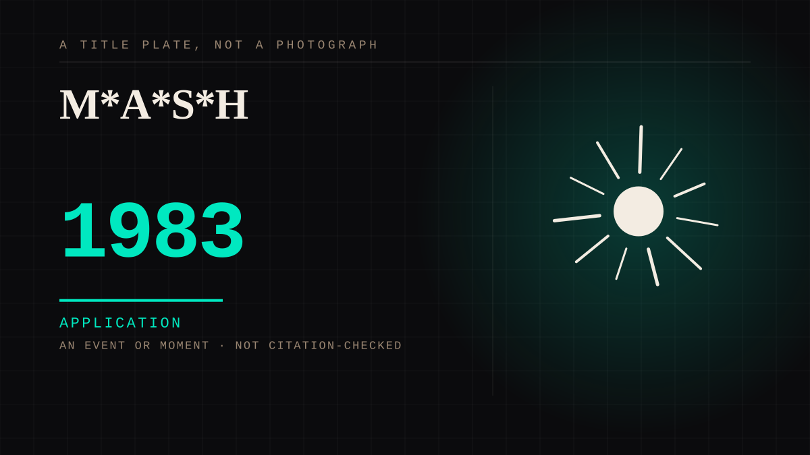

An event or moment · 1983 · Television
M*A*S*H
Twenty-eight million people watched a television finale and the largest audience for a broadcast in history.

The high-water mark of collective parasocial grief in broadcast television, watched by people who had never met a single person in it. Everything since has been smaller and more numerous.
Same story, 3 other entries
The finale study1980 → The finale nobody wanted2019 → The finale that moved the schedule2023
Where it sits
1950 1950-1999 · 1983 1999
Provenance · 2 source record(s)
- retrievable'Goodbye, Farewell and Amen' aired 28 February 1983 and drew roughly 105.9 million viewers, about 38 per cent of American households - the most-watched finale in television history at the time. Directed by Alan AldaGoodbye, Farewell and Amen (Wikipedia); Nielsen ratings as reported contemporaneously. ↗
- retrievableA comedy about war that closed by resolving its central question - Korea, the protagonist, the goodbye - and was watched by a third of the countryM*A*S*H (TV series) (Wikipedia). ↗
Connected · 2 out, 0 in
The sitcom familydepicts · 1960 · A mechanism or tacticThe season finalecites · 1980 · A mechanism or tactic
Reported as a story
It sits in